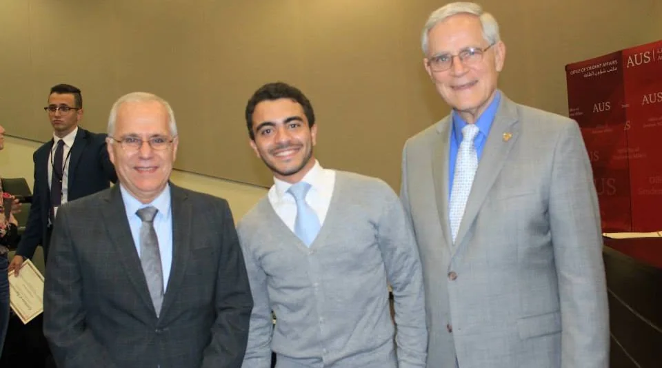

Awards and service
- Third place, ARPA-I Ideas and Innovation Challenge, U.S. Department of Transportation, 2026, with the PRISM team. $150,000 Stage 2 prize.
- Best Paper Award, IEEE/CVF WACV Workshops, 2025.
- Four top-six finishes in the NVIDIA AI City Challenge, 2021 to 2024.
- Most Impactful Company, CodeStock, 2026, for ApexAI.
- Outstanding student award, doctoral level, civil engineering, University of Missouri College of Engineering, April 2021.
- First place, research poster competition, ITS Heartland annual meeting, 2021, for work applying connected vehicle data to congestion and incident detection.
- Research on the effect of COVID-19 on St. Louis transit service was featured on St. Louis on the Air, St. Louis Public Radio, December 2020.
- Fourth place, World Red Bull Can Car Racing Competition, 2011, with a team from the American University of Sharjah.
I co-organized 2COOOL, the 2nd Workshop on the Challenge of Out-of-Label Hazards in Autonomous Driving, held at IEEE/CVF ICCV 2025 in Honolulu. I serve as a reviewer for IEEE CVPR, the ASCE Journal of Transportation Engineering Part A, Transportation Research Record, and IEEE ITSC, and have held leadership positions in the Institute of Transportation Engineers and the American Society of Civil Engineers. I served as president of the ASCE student chapter at the American University of Sharjah for the 2014 to 2015 academic year, and was the first student chapter president to host a sitting ASCE Global President. I have supervised several doctoral and master's students.
